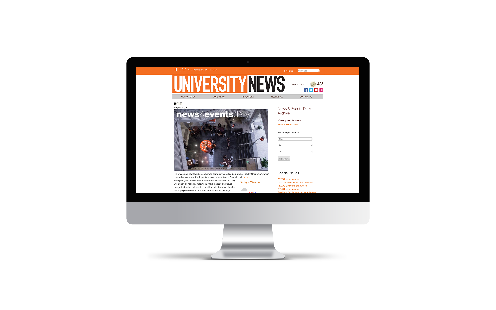

FOCUS AREAS
The current RIT University News website misses the mark for delivering engaging content to its users on a daily basis. After taking a deep-dive into the site, I chose to pull out and focus on three areas specifically:
The current University News website
Content Hierarchy
Establish a clear hierarchy, allowing the user to easily skim the content and find what they are looking for.
Content Grouping
Effectively group and display content in a manner that allows a user to easily find what they are looking for.
Gridded Structure
Employ a strong grid structure in my design to keep alignment consistent throughout.
INITIAL WIREFRAMES
After completing the first version of my reskin, I found myself frustrated with my overall design. Though clean, I felt that certain pieces of information still felt too clustered for my liking. Though some points of the design worked well, it was clear I needed to step back and iterate more in order to produce the best result.
Full-width Feature Story
Immediately attract a user’s attention to the day’s top story, providing a stronger sense of hierarchy.
Article Cards and Scale Hierarchy
While keeping to a gridded structure, offer a variation in scale to emphasize specific articles for the user to view.

Event Card
Combine images and easily digestible information with a card-based format, allowing for improved scannability.
Scoreboard
Allow users to easily view the outcomes of sporting events in a glanceable scoreboard format.

CONCLUSION
As designers, we are forced to recognize and confront our mistakes and shortcomings in order to achieve success as an end-goal. This project was a good lesson in allowing myself to step back and refocus, and ultimately allowed me to produce a stronger project in the end.